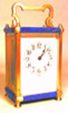
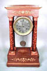
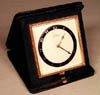
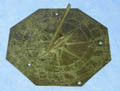
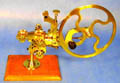
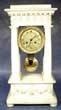
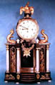
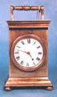
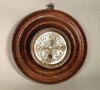
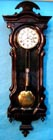

FRENCH CARRIAGE CLOCK Late 19th Century. Anonymous. Gilded brass with lapis lazuli decorations. Eight day time only movement. Perfect, white porcelain dial. Five panel beveled glass. In running condition. Key included. Height approx. 5.75". $695.00

WALNUT PORTICO CLOCK French, mid. 19th Century. Unsigned. Four column walnut case with maple, floral design inlays and maple trim. Silk suspension, eight day movement. Chiming hour and half hour on bell. Silvered champleve dial with beveled glass. In running condition. Height approx. 17.5". $950.00

GUBELIN TRAVEL CLOCK Turn of the 19th Cent. Signed on Ivory dial "Gubelin". High quality, 15 jewel, eight day movement. Real ivory face with black and gold enamel chapter ring. Mounted in black leather, folding case. Hairline crack in ivory. Case embossed with initials "S.R.B.". In running condition. Approx. 4.5" X 4.25" X 1". $185.00

BRONZE SUNDIAL English or American 18th/19th century. Octagonal bronze dial with deeply engraved Roman numerals. Nice dark green patina. Approx. 8.5" in diameter. $495.00

MARINE CHRONOMETER English early 19th century. Signed on silvered dial and ivory plaque "John Brunton 3 America Square London No.513".Two day movement. Spring detent, helical blued-steel spring, two arm bi-metalic compensation balance, diamond end stone.Silvered dial, black Roman numerals, up-and-down scale, subsidiary seconds, gimbaled in three-tier mahogany box with winding key. Diameter of dial approx 4", width of box 7". $3,900.00

ROUNDING-UP TOOL Late 19th Century. Anonymous. Lacquered brass and steel. Rare, with indicator. Mounted on wooden base. Working machine but no No cutters. $950.00

ALABASTER PORTICO CLOCK French, mid 19th Century. Anonymous. Alabaster case with carved decorations. Eight day brass movement striking hour and half hour on bell. Gilded brass dial and bezel. Gilded, temperature compensated pendulum. In running condition. Key included. Height approx. 19". $1,100.00

AUSTRIAN GRAND SONNERIE TABLE CLOCK C. 1820-30. Signed "Joseph Brumer in Vien".Wooden case resembling a stage with mirror walls. Gilded brass decorations and four alabaster columns. Clock above flanked by two gilded dolphins and crowned with gilded eagle. Three-train, grand sonnerie, quarter repeating movement with calendar. Height approx 24.5". $2.700.00

FUSSE CARRIAGE CLOCK Early 19th Century. English. Signed on movement "Jackson Liverpool No. 45". Verge, Fussee one day movement (chain driven), key wind, key set, with key. Time only. White porcelain dial with black Roman numerals set in brass case. Approx. 5" high. In running condition. $695.00

SMALL WALL CLOCK French, second half of 19th cent. Brass movement set in turned mahogany case. Diameter approx 8". Eight day time only, with cylinder escapement platform. Silvered brass dial. In working condition. Key included. $195.00
BRASS CARRIAGE CLOCK French, late 19th cent. Eight day time only movement set in brass five glass panel case. White porcelain dial, blue steel hands. Cylinder escapement platform. In working condition. Key included. $595.00
VIENNA WALL REGULATOR German, Circa.1860-80. Walnut and mahogany 3 pane case, complete with finials. Eight day time and strike, weight driven movement. Striking on the hour and half hour on coiled gong. Brass pendulum bob. 7" white porcelain dial and brass weights. In working condition. Height approx. 50" $1900.00

VIENNA WALL REGULATOR 2 Austrian, circa.1850, anonymous. Carved, three pane case. Eight day time only movement. 7" white porcelain dial with seconds chapter. Overall height approx 46". In working condition. $1900.00

RA WALL REGULATOR German, 19th Cent. Walnut veneer, three pane case. Eight day time and strike, spring driven movement. Striking the hour and half hour on coiled gong. 6.75" white porcelain dial, and brass and porcelain pendulum. In working condition.No finials. Approx. height 24.5". $495.00